Lektion 01
Einführung
Punktierungen, Haltebögen und Akzente verändern die Dauer oder die Betonung innerhalb eines Takts. In diesem Kapitel werden diese rhythmischen Mittel gemischt genutzt und in bekannten Notenwerten und Unterteilungen zusammengesetzt.
Das lernst du.
Du liest und spielst gemischte Rhythmen, vergleichst sie mit gehörten Beispielen und schreibst eigene Takte.
Arbeite vom Viertelpuls aus. Prüfe für jede Figur getrennt, wie lange ein Ton dauert und auf welcher Zählzeit er beginnt.
Wichtig: Halte den Viertelpuls gleichmäßig. Verändere nur die Notendauer oder den Einsatz, den das jeweilige Zeichen vorgibt.
Lektion 02
Lesen
Lies jeden Takt im gleichmäßigen Viertelpuls. Beachte, wie Punktierungen den Wert verlängern, Haltebögen Töne ohne neuen Anschlag weiterführen und Akzente einzelne Noten hervorheben.
Leseübung 1
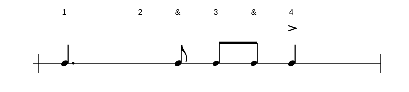
Leseübung 2
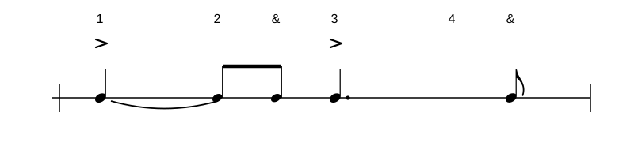
Leseübung 3
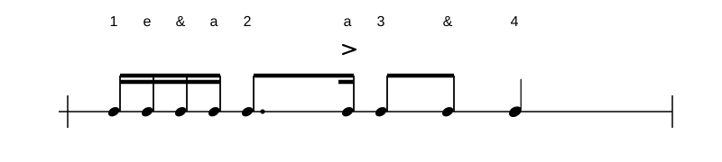
Lektion 03
Hören
Höre zuerst die Aufnahme, zähle den Viertelpuls und beschreibe danach, wo Punktierung, Haltebogen und Akzent zu hören sind. Öffne die Notation erst zur Kontrolle.
Höraufgabe 1
Lösung anzeigen
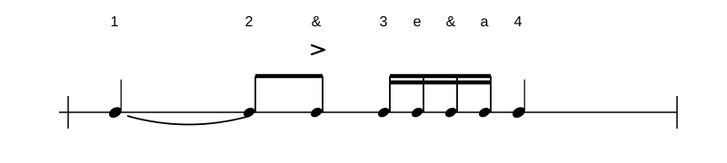
Höraufgabe 2
Lösung anzeigen
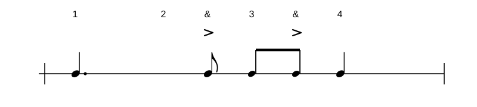
Höraufgabe 3
Lösung anzeigen
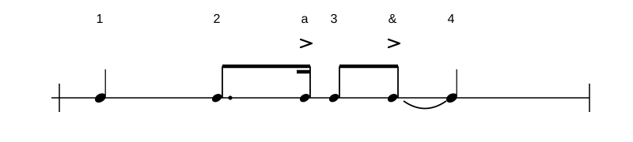
Lektion 04
Fehler finden
Vergleiche die notierte Figur mit der fehlerhaften Aufnahme. Finde heraus, ob die Punktierung, der Haltebogen oder die Position des Akzents anders ausgeführt wird.
Fehler finden 1
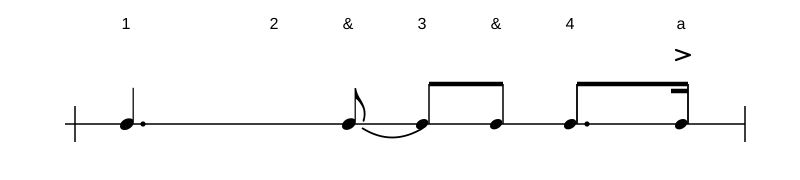
Lösungshilfe
In der Aufnahme ist auf 3& ein Akzent zu hören, der in der Notation nicht eingetragen ist.
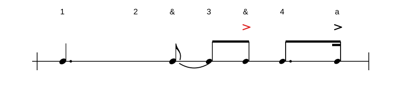
Fehler finden 2
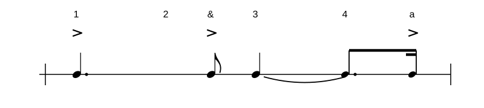
Lösungshilfe
In der Aufnahme führt der Haltebogen von Schlag 3 in eine Sechzehntelnote auf Schlag 4. Das ist ein Fehler: In der Notation steht dort eine punktierte Achtelnote. Zusätzlich erklingen nicht notierte Sechzehntel auf 4e und 4&. Die Sechzehntelnote auf 4a ist korrekt notiert.
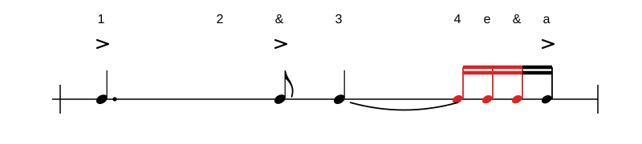
Fehler finden 3
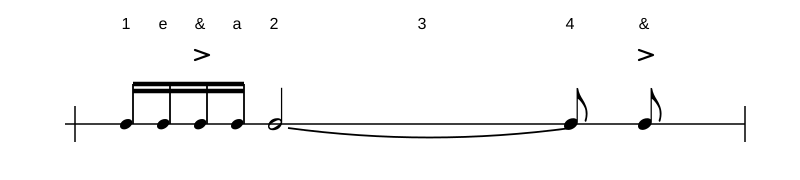
Lösungshilfe
In der Aufnahme ist auf der zweiten Sechzehntel von Schlag 1 ein Akzent zu hören, der in der Notation nicht eingetragen ist.
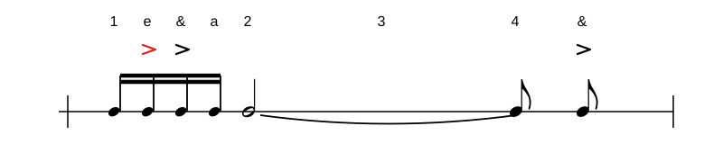
Lektion 05
Gemischte Rhythmen selber setzen
Übung 1 · Zwei eigene Takte
Baue zwei Takte aus den bekannten Notenwerten und Pausen. Setze Haltebögen zwischen direkt aufeinanderfolgende Noten und hebe einzelne Noten mit einem Akzent hervor. Jeder Takt umfasst höchstens vier Schläge.
So setzt du die Zeichen: Klicke für einen Haltebogen oder ein Akzentzeichen zuerst eine Note im Notenbild an und dann das passende Symbol in der Palette. Die Wiedergabe macht gesetzte Akzente durch einen kräftigeren Anschlag hörbar.